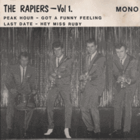

The Rapiers - Vol 1. (EP, 1984)
01 - Peak Hour (2:04)
02 - Got A Funny Feeling (2:28)
03 - Last Date (2:59)
04 - Hey Miss Ruby (2:22)
© Red Door Records :: [RA 001]
Notes
United Kingdom.
Colin Pryce-Jones - Lead guitar, Vocals
Roger Cover - Bass guitar, Vocals
Dave Joker Lawes - Rhythm guitar
Wild Bob Burgos - Drums
reference information: Discogs®
Review
271/366 (Project 366)
Great Rock'n'Roll with early sixties tone, elements of Surf-oriented music and high importance of melodious instrumental tune. Two songs are really fine instrumentals - "Peak Hour" and "Last Date". The first is pretty groovy and emotional, the second instrumental is smooth evening theme. Wonderful pieces of instrumental rockin', rollin' and surfin'. "Got A Funny Feeling" and "Hey Miss Ruby" with continuation of general mood but featured vocals. Actually charming vocals and a lot of guitars energy. All tracks are danceable, bright and picturesque enough. These recordings are also special since of Wild Bob Burgos as a drummer.